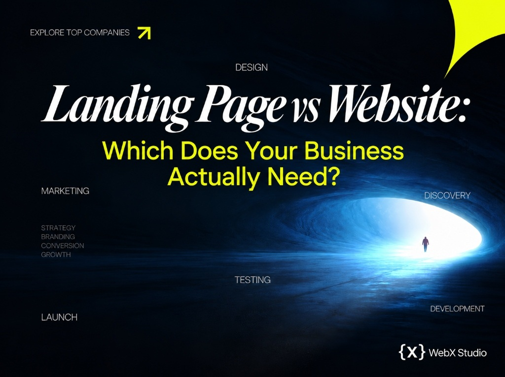

Landing page vs website: which do you actually need?
They look similar and people use the words interchangeably - but they do opposite jobs. Pick the wrong one and you either confuse buyers or quietly leak the leads you paid to attract.

A website is your digital home - multiple pages, full navigation, everything a visitor might want to know about your brand. A landing page is a single, standalone page built to do exactly one thing: convert a specific audience toward a specific action. Same raw materials, fundamentally different intent.
A website is for people who want to explore you. A landing page is for people you want to convert - usually traffic from an ad, email or campaign with one job to do.
The defining difference: focus
A website invites exploration. There’s a menu, links to services, an about page, a blog - paths in every direction, because you don’t know which question each visitor arrived with. That freedom is a strength for organic discovery and a weakness for conversion: every extra link is an exit.
A landing page deletes the exits. No nav, no rabbit holes - one message, one offer, one button, repeated until the visitor either acts or leaves. When you’re paying for each click, that focus is the difference between a campaign that profits and one that bleeds.
Side by side
| Landing page | Website | |
|---|---|---|
| Goal | One action (sign up, buy, book) | Inform, build trust, rank, explore |
| Pages | One | Many |
| Navigation | Minimal or none | Full menu |
| Traffic source | Ads, email, social campaigns | Search, direct, referral |
| Best metric | Conversion rate | Engagement, ranking, reach |
| Build time | About 2-3 weeks | About 5-10 weeks |
When a landing page is the right call
- You’re running paid ads and need every click to count.
- You’re launching one product, event or offer.
- You’re validating demand before building anything bigger.
- You want to A/B test a message fast, without touching your main site.
When you need a full website
- You want to be found on Google for what you do - that’s an SEO game a single page can’t win alone.
- You have multiple services, audiences or products to explain.
- You’re building a brand customers will research before they buy.
- You need credibility: an about page, work, testimonials, contact.
The smartest brands don’t choose. They run a strong website for discovery and trust - and spin up focused landing pages for every campaign.
The cost angle
A landing page is cheaper and faster - one page to design, write and build - which is exactly why it’s the right first move when budget is tight or speed matters. A website is a larger investment because it’s a larger product. We break the full numbers down in how much a website costs in 2026.
The mistake we see most
Founders pour ad spend into their homepage. The homepage is built to serve everyone, so it converts no one in particular - visitors land, see ten options, and bounce. Send that same traffic to a dedicated landing page with one clear promise and one button, and conversion routinely doubles. Same budget, same audience, very different result.
Not sure which one fits your goal?
Tell us what you’re trying to achieve. We design and build both - and we’ll tell you honestly which one earns you more.
Start a project